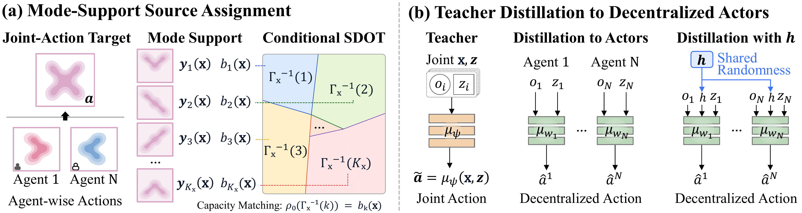
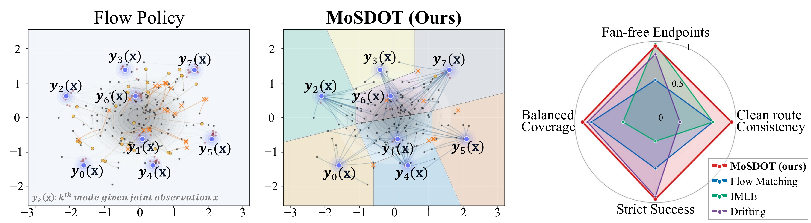

Teacher-side fan mass
Independent noise-target pairings can force adjacent source samples to learn conflicting coordination modes, creating bridges through low-density or invalid regions.
Offline MARL · Generative Distillation · Semi-Discrete OT
MoSDOT aligns source-noise regions with coordinated joint-action modes before teacher training, producing cleaner decentralized one-step actors under CTDE.
Submitted to the 40th Conference on Neural Information Processing Systems (NeurIPS 2026)
TL;DR
Standard flow teachers can route nearby noise samples toward conflicting coordination modes, creating off-support bridges. MoSDOT uses capacity-matched conditional semi-discrete optimal transport to assign each source sample to a single replay-derived mode before teacher training, improving support preservation and route consistency.
Abstract
Offline multi-agent reinforcement learning increasingly uses centralized generative teachers to model multimodal joint behavior and distill it into decentralized one-step actors. The paper identifies a teacher-stage failure mode: independent noise-target pairing can entangle nearby source samples with incompatible coordination modes, causing the teacher to produce samples between valid modes. The downstream distillation loss can then propagate this error to local actors.
MoSDOT summarizes multimodal replay into a finite mode support with prescribed capacities, then partitions source-noise space using conditional semi-discrete optimal transport. A shared-randomness variant further exposes the residual gap caused by strict-product execution when correlated joint support cannot be represented by independent local sampling.
Motivation
For decentralized execution, a teacher must not only reach valid joint modes; it must choose modes in a way that local actors can reproduce.
Independent noise-target pairings can force adjacent source samples to learn conflicting coordination modes, creating bridges through low-density or invalid regions.
When a teacher's mode choice depends on information hidden from a local actor, pointwise local regression averages distinct branches.
Even a clean centralized teacher may represent correlated joint support that independent local sampling cannot exactly reproduce.
Method
MoSDOT inserts a structured source-to-mode assignment stage before training the centralized flow teacher.

Group replay joint actions at each context into representative coordinated modes yk(x).
Assign target source mass bk(x), usually by empirical replay frequency.
Partition source space into Laguerre cells Γx-1(k), each assigned to one mode.
Train the centralized teacher on aligned paths and distill teacher samples into local one-step actors.
Results
Across controlled diagnostics and offline MARL benchmarks, the strongest gains appear when replay contains diverse joint behaviors.

| Evaluation | MoSDOT | Strong reference | Takeaway |
|---|---|---|---|
| Landmark teacher route consistency | 0.972 | Flow matching 0.856 | Cleaner source-to-mode routing |
| Landmark student fan-free | 0.971 | Flow matching 0.849 | Teacher geometry survives distillation |
| SMACv1 average reward | 16.7 | MAC-Flow 15.6 · DoF 15.6 | Strong discrete-action average |
| SMACv2 average reward | 11.9 | DoF 14.0 · MAC-Flow 13.1 | Competitive but not best on all regimes |
| MPE Simple Spread average | 82.6 | MAC-Flow 65.8 · ICQ 58.8 | Clear gains on diverse continuous replay |
Visual diagnostics


Algorithm
The strict-product variant trains a centralized SDOT-aligned teacher, learns a centralized critic, and distills local actors. The shared-randomness extension changes only the distillation and execution-time actor signature by providing a public signal h.

Citation
Replace the author, venue, and archive fields after the public version is available.
@misc{anonymous2026mosdot,
title = {Multi-Agent Coordination via Support-Preserving Distillation},
author = {Anonymous Author(s)},
year = {2026},
note = {Submitted to NeurIPS 2026}
}